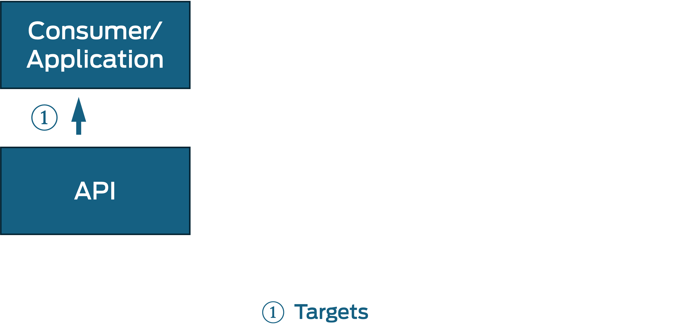
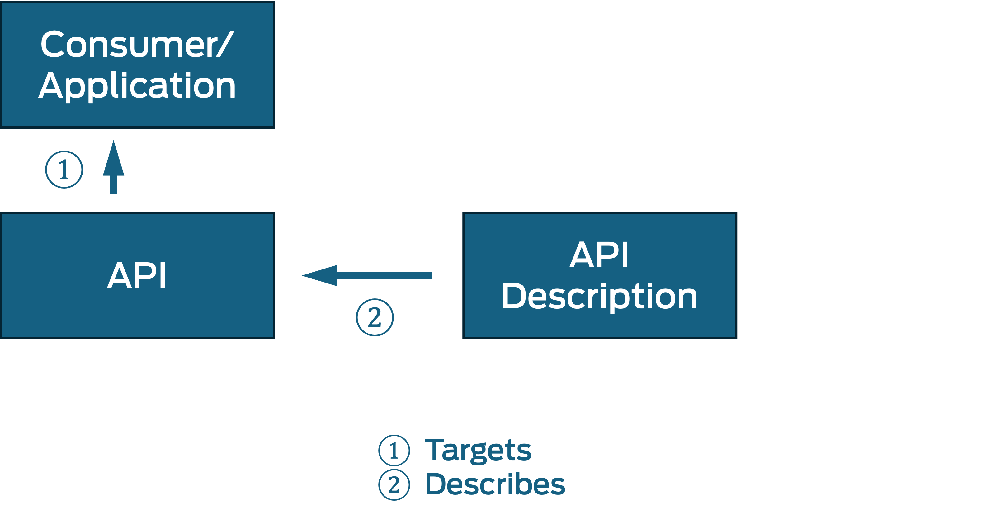
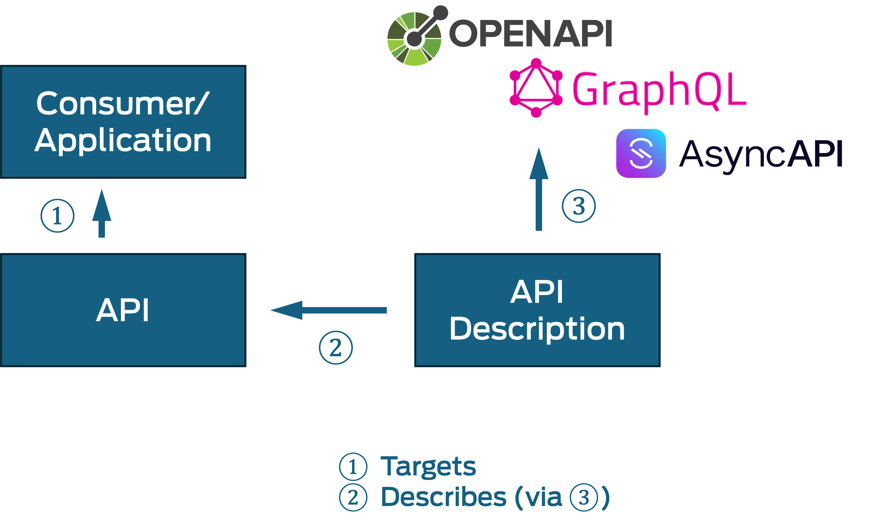
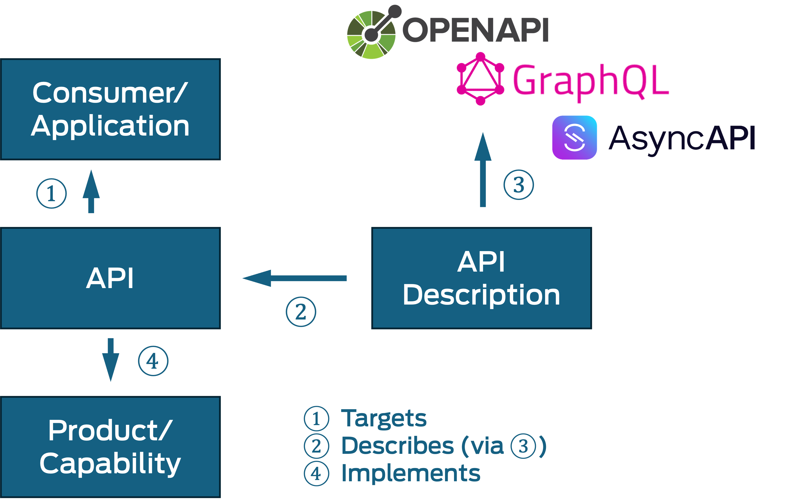
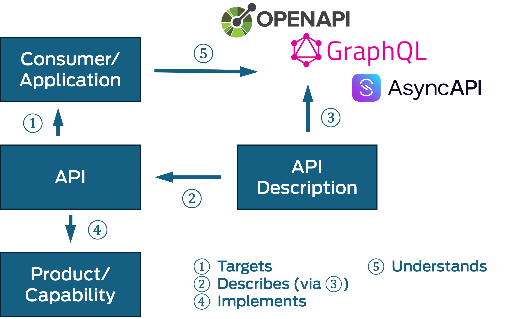
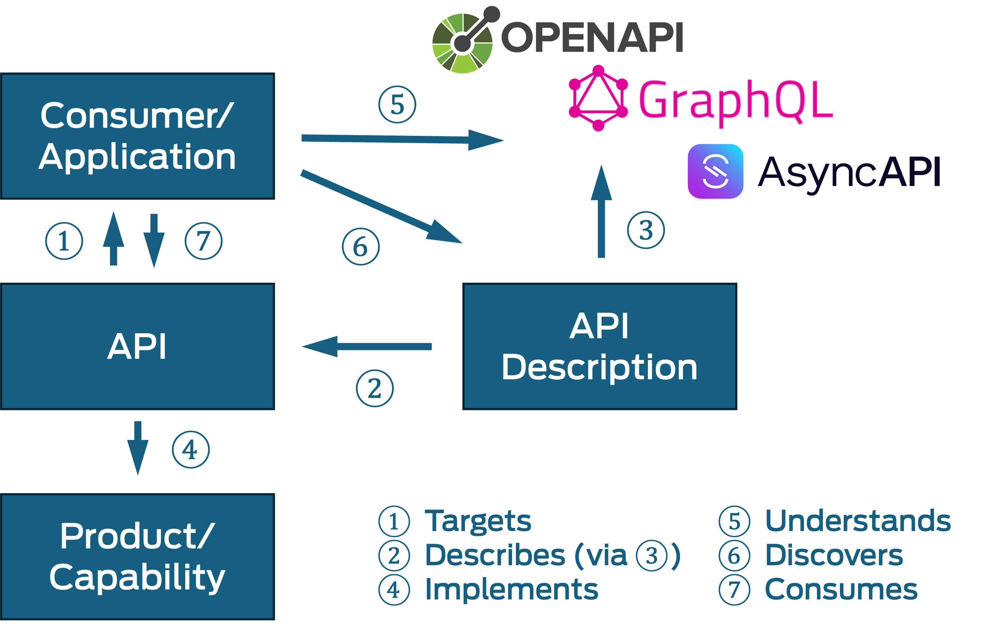

(2) Summary
One of the superpowers of APIs is to design them as products with a focus on making
them reusable. That helps with innovation and reuse, as teams can now consume the
capabilities of other teams without having to coordinate with them, leading to faster
flow. For this to work well, API versioning must be handled in a way that allows the
API to evolve while at the same time not breaking existing consumers. What do you
have to version? Why does it matter? When should you version? We present tips that
help to improve your API design, description and documentation practices.
APIs and API Descriptions
(16) Finding and Addressing a Market

(17) Describing the Product

(18) Using Standardized Description Languages

(19) Creating the Product

(20) Understanding the Standard

(21) Finding and Consuming Descriptions
(22) Consuming Described Products
